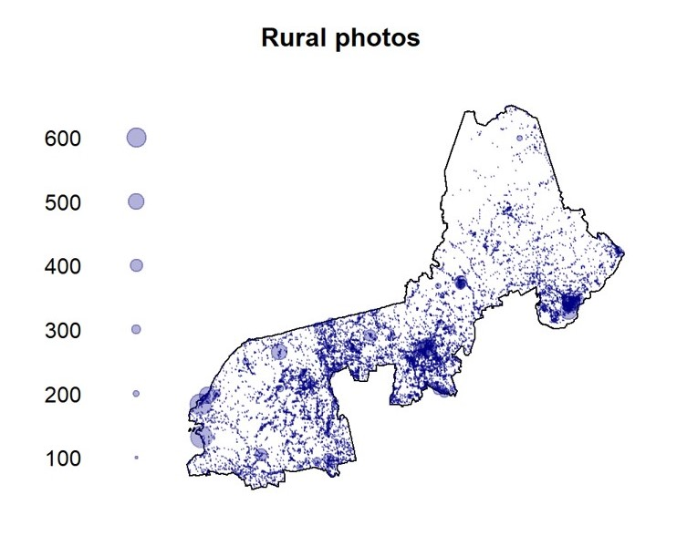

My research mostly resides in the realm of ecology and conservation biology, with a focus on amphibians and reptiles. I am most interested in studying wildlife populations over different gradients of natural and human disturbance, and applying those relationships for understanding future threats against biodiversity and guiding conservation planning. I work with a variety of organisms and ecosystems, ranging from vernal pool amphibians to Galápagos tortoises, and use various quantitative techniques for studying ecological and demographic processes. I’m also interested in social science perspectives in ecological research and using historical data and social-ecological frameworks to better understand complex conservation stories.
Here is a short list of some projects I’ve worked on over the last several years.
Left: A Tapichalaca tree frog (Hyloscirtus tapichalaca) from southern Ecuador. Right: Spotted salamander (Ambystoma maculatum).
Most forests in the eastern United States have rich histories of human disturbance, many having once been cleared for agriculture and regenerated in the last century. These landscape transformations came at a cost for seasonal wetlands, also known as “vernal pools” in the northeast, which are central to the life cycles of many frogs and salamanders. In recent decades, many landowners have taken to creating artificial pools as a means of restoring amphibian habitat, but these created pools have mixed rates of success for amphibian populations.
For my master’s thesis, I was interested in how historical landscape setting (i.e., adult habitat quality) and pool densities (i.e., larval habitat availability) interactively affect the outcome of these habitat restoration projects. This work occurred at Heiberg Memorial Forest, an experimental research station operated by SUNY ESF in Tully, NY.
Land cover at Heiberg Memorial Forest (Tully, NY) in 1936 (top) and 2015 (bottom).
Relevant literature:
Goldspiel HB 2018. “Forest Legacy Effects on Amphibian Populations: Integrating Land and Life Histories in Conservation” (2018). Dissertations and Theses. 40. https://digitalcommons.esf.edu/etds/40
Goldspiel HB, Cohen JB, McGee GG, Gibbs JP. 2019. Forest land-use history affects outcomes of habitat augmentation for amphibian conservation. Global Ecology and Conservation 19. https://doi.org/10.1016/j.gecco.2019.e00686
Media: The Wildlife Society
With rapid advancements in transgenic research, biotechnology has become more commonplace in discussions about ecological restoration. These techniques present numerous opportunities for conservation, as well as numerous uncertainties about potential non-target effects on other organisms. Following decades of research at SUNY ESF with the American Chestnut Project, American chestnut (Castanea dentata) has become a primary case study of species restoration using biotechnology. As part of the regulatory approval process for planting these trees, various studies have been done to examine non-target effects on native species and ecological processes. Until 2017, no research had yet been conducted to examine potential effects of transgenic chestnut on forest vertebrates, such as amphibians. In collaboration with the American Chestnut Project, I conducted a lab survival experiment to study interactions between transgenic American chestnut litter and amphibian larvae.
Left: Sample vials of leaf litter with pond water from central New York. Right: a wood frog (Lithobates sylvaticus) tadpole.
Relevant literature:
Media: Pacific Standard
I have been collaborating with Galapagos Conservancy’s Giant Tortoise Restoration Initiative (GTRI) since 2018, providing technical support on long-term demographic and ecological data on tortoises and islands in the Galápagos archipelago.
Population regeneration of giant tortoises on Española following 50 years of captive breeding and repatriation.
Once numbered in the hundreds of thousands throughout the archipelago, Galápagos tortoises have suffered extreme population declines and extinctions over hundreds of years due to human activity. GTRI works together with the Galápagos National Park Directorate to restore tortoise populations to their historical ranges and sizes, via research, captive breeding, and management programs.
Relevant literature:
Tapia, WA, Goldspiel, HB, Sevilla, C, Málaga J, Gibbs, JP. 2020. Santa Fe Island: Return of Tortoises via a Replacement Species. In: Gibbs, JP, Cayot, L, Tapia, WA, editors. Galapagos Tortoises, 1st Edition. Academic Press, Cambridge, MA.
Gibbs, JP and Goldspiel, HB. 2020. Population Biology. In: Gibbs, JP, Cayot, L, Tapia, WA, editors. Galapagos Tortoises, 1st Edition. Academic Press, Cambridge, MA.
Media: NY Times, The Guardian, The Daily Show, Wait Wait Don’t Tell Me
Compiled in R with RMarkdown and Github Pages.
Copyright © Harrison Goldspiel.
Social media and forest recreation

Project websites: ESF, NSRC
Vignettes: Point pattern analysis, Flickr tag mapping
Relevant literature: